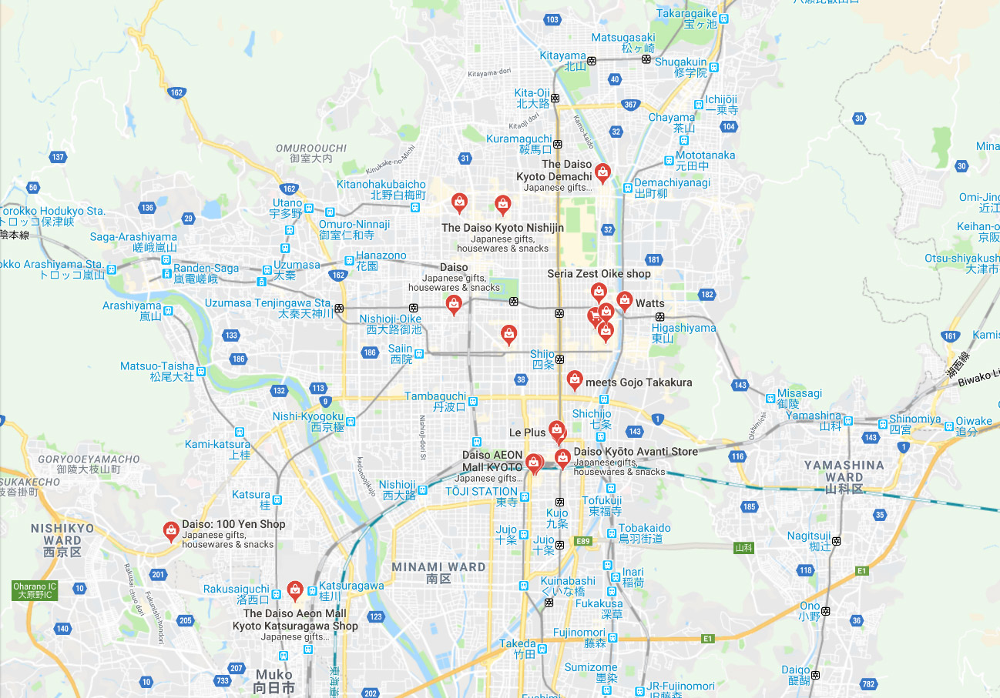

Cheap Goods Guide
Created by Bashyal Lal Prasad
Cheap Goods at 100 Yen Shops in Kyoto:
100-yen shops (100円 ショップ, Hyaku En Shoppu) are a kind of markdown store that sell a wide scope of items for 108 yen (100 yen in addition to 8 percent utilization charge). This compares generally to one US dollar, making these shops an extraordinary hotspot for explorers and occupants on a spending limit
Ordinarily everything in the store costs 100 yen; be that as it may, they frequently sell littler things, for example, treat and tidbits, in products of 2 or 3 for 100 yen. A few stores likewise sell chosen things for in excess of 100 yen, which are typically valued in products of 100 yen. These things will be plainly stamped, and, albeit progressively costly, are generally still a decent incentive at the cost
There are a great many 100-yen shops crosswise over Japan, going in size from multi-story "retail establishments" to little corners in shopping centers. Market pioneer Daiso works more than 3000 stores across the nation
100-yen shops can offer an astonishing scope of items, a significant number of which are their own store-marked merchandise, at a value that is at times beneath the item's real worth. They do this primarily by buying items in colossal amounts straightforwardly from makers, which are regularly situated in nations with low generation and work costs
Below is a selection of products typically found at 100-Yen Shops
Tableware
Plates, rice and miso soup bowls, tea cups, sake sets, forks, etc.
Kitchenware
Knives, dippers, microwave containers, coffee filters, detergent, aluminum foil, etc.
Tools
Hammers, measuring tapes, pliers, screwdriver sets, cutter knives, etc.
Gardenware
Watering pots, mini rakes, containers, etc.
Stationary
Boxes, report pads, memo pads, pens, pins, calligraphy brushes, etc.
Household Goods
Sewing threads, towels, socks, slippers, etc.
Leisure Goods
Ping pong sets, swimming goggles, English-Japanese dictionaries, etc.
Map of 100-Yen Shops in Kyoto
Here is a link to find 100-Yen Shops near you
https://japantravel.navitime.com/en/area/jp/destinations/A0526/spot/?categoryCode=0206018&page=1